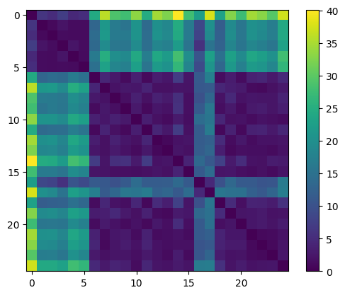
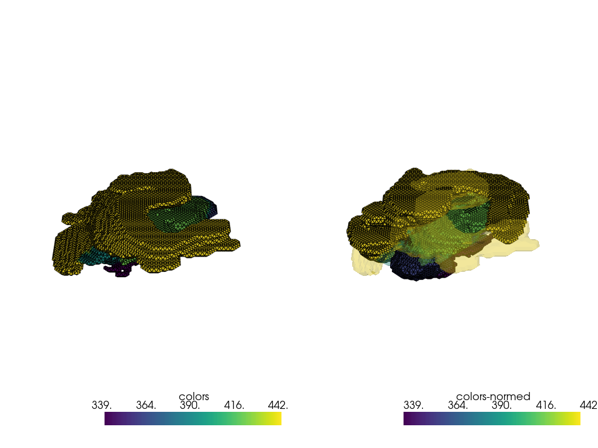
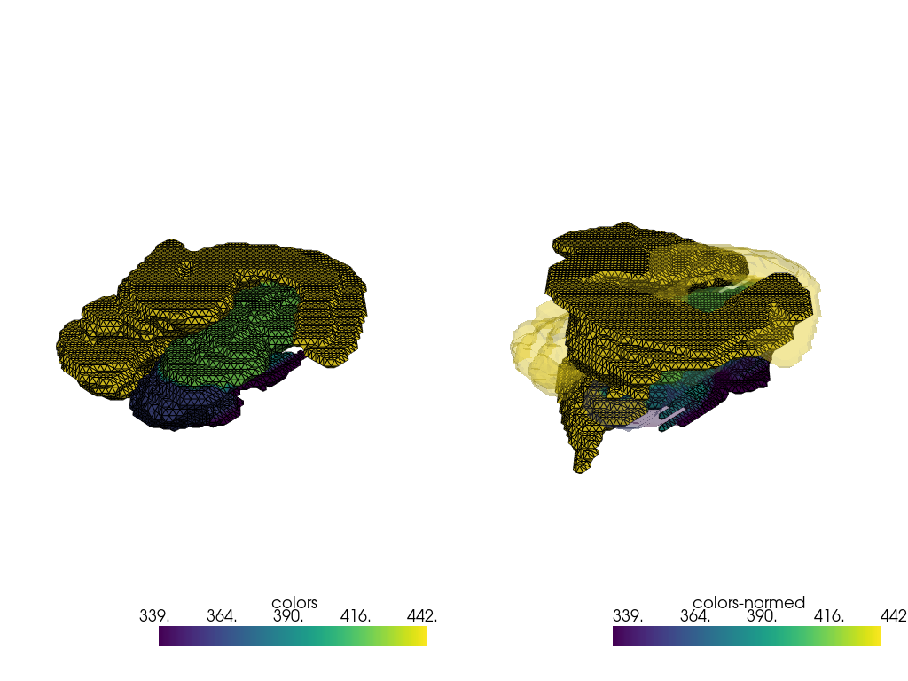
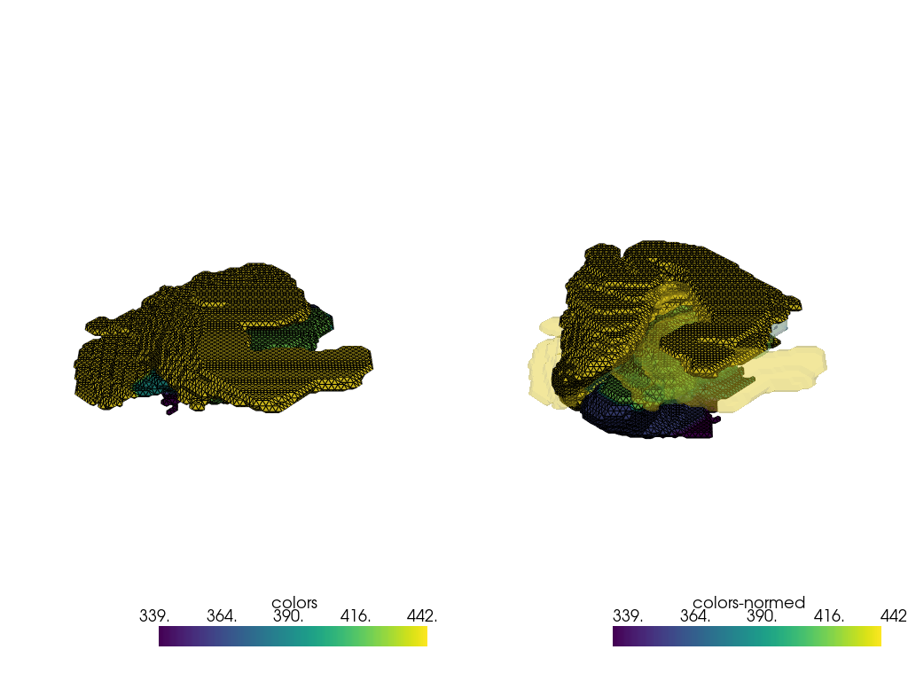

Identify left-right swap in brain segmentation data#
Main goal: show how a varifold distance can be used to identify left-right file misnamings when segmenting brain data.
Hypotheses:
misnamings exist
clusters result from misnamings, i.e. a left mesh is closer (wrt varifold distance) to any other left mesh than to a right mesh
Additional goals:
show how a varifold metric kernel can be automatically found through a decimation-based technique (i.e. the distance between a mesh and its decimated version must be very small - ideally zero) depending on a grid-search and elbow detection
[1]:
import os
os.environ["GEOMSTATS_BACKEND"] = "pytorch"
[2]:
import itertools
import geomstats.backend as gs
import numpy as np
import pyvista as pv
from geomstats.varifold import VarifoldMetric
from matplotlib import pyplot as plt
from sklearn.cluster import AgglomerativeClustering
from polpo.preprocessing import (
BranchingPipeline,
EmptySkipper,
ExceptionToWarning,
Map,
NestingSwapper,
Pipeline,
Sorter,
Truncater,
)
from polpo.preprocessing.dict import (
DictMap,
DictNoneRemover,
DictUpdate,
Hash,
HashWithIncoming,
SelectKeySubset,
)
from polpo.preprocessing.load.pregnancy import FigsharePregnancyDataLoader
from polpo.preprocessing.mesh.clone import TrimeshClone
from polpo.preprocessing.mesh.conversion import (
PvFromTrimesh,
SurfaceFromTrimesh,
TrimeshFromData,
TrimeshFromPv,
TrimeshSurfaceFromTrimesh,
TrimeshToData,
)
from polpo.preprocessing.mesh.decimation import FastSimplificationDecimator
from polpo.preprocessing.mesh.transform import MeshCenterer, MeshScaler
from polpo.preprocessing.mri import MeshExtractorFromSegmentedImage, MriImageLoader
from polpo.preprocessing.path import FileFinder, IsFileType, PathShortener
from polpo.preprocessing.str import DigitFinder, StartsWith
from polpo.varifold import GridBasedSigmaFinder
[KeOps] Warning : cuda was detected, but driver API could not be initialized. Switching to cpu only.
[3]:
STATIC_VIZ = True
if STATIC_VIZ:
pv.set_jupyter_backend("static")
Conversion pipes
[4]:
trimesh_to_pv = Map(PvFromTrimesh(), force_iter=True)
trimesh_to_surface = Map(SurfaceFromTrimesh(), force_iter=True)
trimesh_to_trisurface = Map(TrimeshSurfaceFromTrimesh(), force_iter=True)
pv_to_data = Map([TrimeshFromPv(), TrimeshToData()])
Loading pipeline
[5]:
folders_finder = Pipeline(
[
FigsharePregnancyDataLoader(
data_dir="~/.herbrain/data/pregnancy/",
remote_path="Segmentations",
),
FileFinder(),
Sorter(),
Truncater(value=None),
],
)
mri_to_mesh = ExceptionToWarning(
[
MriImageLoader(),
MeshExtractorFromSegmentedImage(struct_id=-1, encoding="ashs"),
TrimeshFromData(),
]
)
digit_finder = Map(
step=[
PathShortener(),
DigitFinder(index=0),
]
)
left_meshes_loader = BranchingPipeline(
branches=[
digit_finder,
Map(
step=[
FileFinder(rules=[StartsWith("left"), IsFileType("nii.gz")]),
EmptySkipper(step=mri_to_mesh),
]
),
],
merger=[NestingSwapper(), Hash(ignore_empty=True)],
)
loading_pipe = folders_finder + left_meshes_loader
[6]:
raw_data = loading_pipe.load()
INFO: Data has already been downloaded... using cached file ('/home/luisfpereira/.herbrain/data/pregnancy/Segmentations').
[7]:
meshes = list(raw_data.values())
Processing
[8]:
processing_pipe = Map(
[
TrimeshClone(),
MeshScaler(scaling_factor=20.0),
MeshCenterer(),
],
force_iter=True,
)
Find kernel params
(A simpler distance could probably have been used.)
[9]:
decimation = (
Map(
step=[
TrimeshToData(),
FastSimplificationDecimator(target_reduction=0.99),
TrimeshFromData(),
],
force_iter=True,
)
+ processing_pipe
)
[10]:
template_index = 0
template_mesh = processing_pipe(meshes[template_index])
decimated_template_mesh = decimation(meshes[template_index])
[11]:
sources = trimesh_to_trisurface([template_mesh, decimated_template_mesh])
sigma_finder = GridBasedSigmaFinder()
sigma_finder.fit(sources)
kernel = sigma_finder.kernel_builder(sigma_finder.sigma_)
sigma_finder.sigma_
/home/luisfpereira/Repos/github/geomstats/geomstats/_backend/pytorch/_common.py:8: UserWarning: The given NumPy array is not writable, and PyTorch does not support non-writable tensors. This means writing to this tensor will result in undefined behavior. You may want to copy the array to protect its data or make it writable before converting it to a tensor. This type of warning will be suppressed for the rest of this program. (Triggered internally at ../torch/csrc/utils/tensor_numpy.cpp:206.)
return _torch.from_numpy(x)
[11]:
tensor(0.9197)
Compute distance matrix
[12]:
decimate = True # much faster
if decimate:
surfaces = trimesh_to_trisurface(decimation(meshes))
else:
surfaces = trimesh_to_trisurface(meshes)
surface_pairs = list(itertools.combinations(surfaces, 2))
[13]:
kernel = sigma_finder.kernel_builder(sigma_finder.sigma_)
varifold_metric = VarifoldMetric(kernel)
[14]:
# ~4min if not decimated
# ~5sec if decimated (0.9)
# ~2sec if decimated (0.95)
# <1sec if decimated (0.99)
sdists = [varifold_metric.squared_dist(*pair) for pair in surface_pairs]
[15]:
indices = list(itertools.combinations(range(len(surfaces)), 2))
sdists_mat = gs.zeros((len(surfaces), len(surfaces)))
for sdist, index_pair in zip(sdists, indices):
sdists_mat[*index_pair] = sdists_mat[*list(reversed(index_pair))] = sdist
[16]:
plt.imshow(sdists_mat)
plt.colorbar()
[16]:
<matplotlib.colorbar.Colorbar at 0x79d649082ea0>

Find clusters
[17]:
clusterer = AgglomerativeClustering(n_clusters=2).fit(gs.to_numpy(sdists_mat))
/home/luisfpereira/miniconda3/envs/py12/lib/python3.12/site-packages/scipy/cluster/hierarchy.py:796: ClusterWarning: The symmetric non-negative hollow observation matrix looks suspiciously like an uncondensed distance matrix
return linkage(y, method='ward', metric='euclidean')
Viz
[18]:
indices = [5, 6]
pvmeshes = trimesh_to_pv(processing_pipe([meshes[index] for index in indices]))
pl = pv.Plotter(shape=(1, 2), border=False)
pl.subplot(0, 0)
pl.add_mesh(pvmeshes[0], show_edges=True)
pl.subplot(0, 1)
pl.add_mesh(pvmeshes[1], show_edges=True)
pl.add_mesh(pvmeshes[0], opacity=0.25)
pl.link_views()
pl.show()

Load wrong meshes
[19]:
# assumes first mesh is proper
reflected_keys = np.array(list(raw_data.keys()))[
clusterer.labels_ != clusterer.labels_[0]
].tolist()
reflected_keys
[19]:
[7, 8, 9, 10, 11, 12, 13, 14, 16, 17, 18, 19, 20, 21, 22, 23, 24, 25, 26]
[20]:
right_meshes_loader = folders_finder + [
HashWithIncoming(key_step=digit_finder),
SelectKeySubset(reflected_keys, keep=True),
DictMap(
[
FileFinder(rules=[StartsWith("right"), IsFileType("nii.gz")]),
mri_to_mesh,
]
),
]
[21]:
right_meshes = right_meshes_loader()
INFO: Data has already been downloaded... using cached file ('/home/luisfpereira/.herbrain/data/pregnancy/Segmentations').
/home/luisfpereira/Repos/github/polpo/polpo/preprocessing/_preprocessing.py:39: UserWarning: File /home/luisfpereira/.herbrain/data/pregnancy/Segmentations/BB26/right_lfseg_corr_usegray_PRHC.nii.gz is not a gzip file
warnings.warn(str(e))
[22]:
index = 7
pvmeshes = trimesh_to_pv(processing_pipe([raw_data[index], right_meshes[index]]))
pl = pv.Plotter(shape=(1, 2), border=False)
pl.subplot(0, 0)
pl.add_mesh(pvmeshes[0], show_edges=True)
pl.subplot(0, 1)
pl.add_mesh(pvmeshes[1], show_edges=True)
pl.add_mesh(pvmeshes[0], opacity=0.25)
pl.link_views()
pl.show()

Replace wrong meshes
[23]:
meshes_merger = DictUpdate() + DictNoneRemover()
[24]:
fixed_raw_data = meshes_merger([raw_data, right_meshes])
Check new distance matrix
[25]:
fixed_meshes = list(fixed_raw_data.values())
[26]:
if decimate:
surfaces = trimesh_to_trisurface(decimation(fixed_meshes))
else:
surfaces = trimesh_to_trisurface(fixed_meshes)
surface_pairs = list(itertools.combinations(surfaces, 2))
[27]:
sdists = [varifold_metric.squared_dist(*pair) for pair in surface_pairs]
[28]:
indices = list(itertools.combinations(range(len(surfaces)), 2))
sdists_mat = gs.zeros((len(surfaces), len(surfaces)))
for sdist, index_pair in zip(sdists, indices):
sdists_mat[*index_pair] = sdists_mat[*list(reversed(index_pair))] = sdist
[29]:
plt.imshow(sdists_mat)
plt.colorbar()
[29]:
<matplotlib.colorbar.Colorbar at 0x79d61c127d10>

[30]:
indices = [0, 16]
pvmeshes = trimesh_to_pv(processing_pipe([fixed_meshes[index] for index in indices]))
pl = pv.Plotter(shape=(1, 2), border=False)
pl.subplot(0, 0)
pl.add_mesh(pvmeshes[0], show_edges=True)
pl.subplot(0, 1)
pl.add_mesh(pvmeshes[1], show_edges=True)
pl.add_mesh(pvmeshes[0], opacity=0.25)
pl.link_views()
pl.show()
